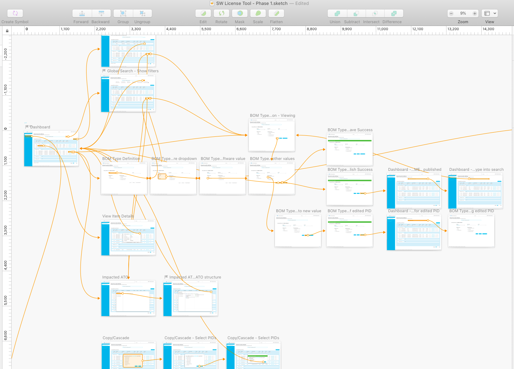
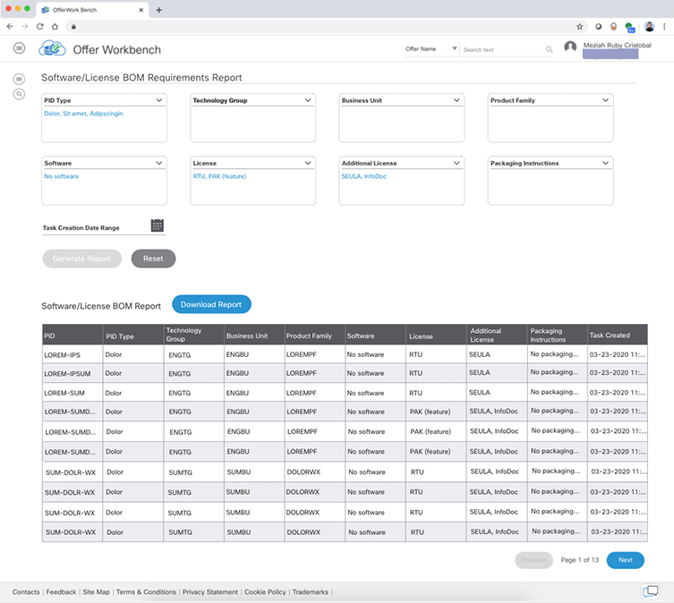

Featured work:
Software/License Offer Configuration Tool
The problem:
Product Managers are currently passing Excel sheets back and forth via email to collaborate on offer configurations. This results in a lot of churn due to miscommunicated validations, typos, and just outright missed emails.
The goal:
A dashboard-like tool where Product Managers and Business Unit Project Managers (Admin-type users) can define and view any pending offer configurations.

Users and Use Cases
Product Managers (PM): the primary user; they want an easy way to define configurations for the offer (main use) and to run reports that shows configuration details and statuses for their entire product familyBusiness Unit Project Managers (BUPM): the admin-type user; they want to easily see the configuration details and statuses of their entire product family; they will sometimes define configurations themselves if the primary PM is unavailable
Feature List
There are four screens that in turn correspond to the 4 main use cases:- Dashboard: Gives an overview of all pending Offer Configurations; Allows user to take action from this page easily
- Configuration Definition: Where the user configures a PID by filling out a form with built-in validations specific to that PID's attributes
- Reports: Allows users to generate a report that shows the status of each Offer in terms of PID configuration completion
- Master Data Management: Allows admin users to modify the Configuration Definition page's list of values, without the need for IT intervention
My role
I created the prototypes used in the final requirements review and developer commit meetings.I was also the UI Engineer who developed the HTML/CSS and the Front-End Engineer who integrated the REST API's provided by my Back-End Engineer teammate.
Tools used
Prototype: SketchCode: Angular, HTML/CSS, Java, Mongo, Postman
Project Status
Released to productionThe Process
Mockups to Prototypes
As with any good tool, the interface was simple but the services and logic underneath were complex. I spent the first couple days of the project just trying to understand the use cases and the many attributes we were required to show.
Each Offer has n number of PIDs ("Product ID", think "SKU" or parts) to be configured, and each PID had over two dozen attributes. Each one was a necessary reference point for the PM defining the configurations, so there was no way to reduce the list. (Trust me, I tried.)
With the help of the IT Analyst, I went through each attribute to figure out whether it should be shown by default, or if it could be stashed away in a modal or "Hide/Show Column".
Once I figured that out, I sketched some mockups on paper.
The IT Analyst and I had several short meetings over the next couple of days, where I would bring my sketches to his desk so we can discuss my proposed approach. The paper sketches allowed me to iterate quickly on his feedback, so I was able to move to digital prototyping after just a couple days of prototyping on paper.
In total, I prototyped 40+ artboards in Sketch (including intermediary steps, so the prototype can be interactive).
The next step was to give the prototype to the IT Analyst so they could gather feedback from the stakeholders.
Fortunately, the business stakeholders were quite pleased with the prototypes. They had two main feedback: (1) change the sidebar navigation to a dropdown menu (it's okay if their user will have that additional click), so that (2) as many attributes as possible could be shown in the dashboard.
I only had to update one screen before starting my work in Angular.
A scan of one of the 30+ paper mockups I had for this project. (Please excuse the poor penmanship and the illegible annotations. I promise that my point got across to the IT Analyst despite those.)

A zoomed out screenshout of my Sketch file for this project.
Prototype to Production Code
Prep Work
While I was waiting for feedback on the prototypes, I worked with the Team Lead to design the services architecture in the back-end. I gave him my requirements from the client-side in terms of data fetches, and he helped determine how many Mongo collections were needed.It took the better part of a day to synthesize all of this information and mock the REST services in a requirements document, but it later proved to be well worth the effort. The Back-End Engineer I worked with was based in India, so we used this document as a way to be on the same page while developing separately.
UI Features Implemented
- Lazy-loaded, single-page Angular app
- Search Filters across many subcomponents (Referred to by the users as "grid search" in the Dashboard)
- User role authentication to determine which components are viewable/actionable by the user
- 8 different modals for use cases like: viewing additional attributes, performing a multi-select action, previewing a configuration
- "Show/Hide Columns" functionality on Dashboard
- Reactive NgForm for the Configuration Definition page
- Accordion UI component (Made to be reusable across the platform, not just this tool)
Challenges During Development
Passing fetched data between components were an issue at times, especially when the staging environments were slow. When the API calls would timeout, the UI would get stuck "loading". To resolve this, I made full use of Angular's Observables. (Every sub-component had at least 3. When I have downtime, I'd like to revisit this and refactor.)I also had to refactor the form validations for the Configuration Definiton page a few times during QA and Business Acceptance Testing (BAT), because either (1) the tool would hit the max call stackduring stress testing, or (2) the BAT team would find a corner case that wasn't previously captured in the requirements. What truly helped resolve this was the BAT team giving a more streamlined list of validations for me to implement. After that, the form passed stress testing and BAT was finished.
Screenshot of the Dashboard, where most of the listed UI features were implemented to the user's benefit. For example, you can see from this picture the Show/Hide Columns, Action buttons, and other links that trigger modals.

Screenshot of the Report, where the user can select their report parameters from dropdowns capable of search and auto-suggest.
The Takeaways
Before starting development, mocking API request and responses are a must
I cannot stress enough how much the requirements document helped us move faster, especially when timezones made it hard to discuss. I'm not sure what the practice is outside of my team, but this is something that should be done by every team. I'll be giving this feedback to the IT Analyst as well; I think the expected request and response should be included in the user stories.Sometimes, even the business stakeholder doesn't really know what their user wants
IT requirements are often given by business stakeholders who represent a certain business unit or group of users. We rely a lot on them (and in turn on the IT Analyst they interface with), but even they had missed use cases and given us outdated validation rules to implement.Observables aren't that scary
To be honest, I've always shyed away from using Observables before because I felt it was too difficult to master. (I much preferred straight-forward Input and Output.) This project more than mandated its use, so I got my fair share of practice. I'll be a lot less scared and more prepared to use it next time.Note: I can only share a few pictures on my website, but please feel free to ask me further questions about the project if you're interested. I'd love to share what I could!